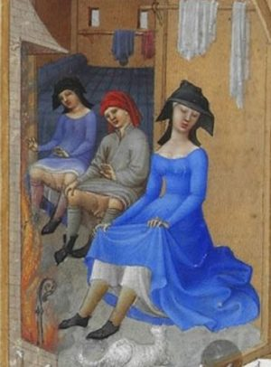
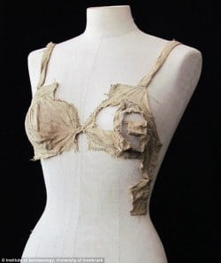

Did Lady Macbeth wear knickers?

My main aim when writing historical novels is to drop the reader into the world of my characters – to send them there to touch and taste and see and smell the places where they lived. For me, the true fascination in delving into the past is not in the headline dates – the battles and the changes of leadership and the grand buildings – but the everyday details of life in a different era. What did it feel like for my heroine when she got up in the morning? What bed did she rise from? What floor did her feet touch? What clothes did she put on and what did she eat? These are the details that will make a reader experience what it was like to live in, say, 1040, but they are also (at least when writing in any period before the eighteenth century when women actually started to record their day to life) the details that are the hardest to find out.
Needless to say, back in a time when paper – or bark or stone tablets - were hard to come by and hardly anyone could write (even if they’d actually come up with the letters with which to do so) reports were scarce and largely preoccupied with the ‘important’ things like who owned what land. No one took the time to write down what they’d had for dinner or what material their new dress was made of. The pre-1066 period was not one of diarists so the day-to-day minutiae of life is rarely recorded. And certainly no one bothered to set down for those us hungry to know a thousand years down the line, what they did for underwear and how they went to the toilet. And yet these are the things that must have made up far more of their life than going to grand meetings or feasts.
So did Lady Macbeth wear knickers? As far as we can tell, no. Received wisdom is that the first undergarments worthy of the name appeared in the eighteenth century as ‘knickerbockers’ and evolved from there. However, every so often a tantalising artefact emerges to offer us some glimpses into the intimate life of those from the past and the picture they present is, rather wonderfully, far more sophisticated than we’d expect.

A crucial find was made in 2008 when bras and knickers were found at Lenberg Castle, Austria, that were so similar in style to modern underwear it was feared they were a prank. Testing, however, confirmed that they dated from between 1390 and 1485, and so we now had hard evidence that our ancestors were tackling the same support issues as women today. No surprise there, surely?!It is my constant belief that people in the past, even the far-off past of the pre-1066 period, were not so very different from us as many persist in believing. True, they didn’t have such advanced travel or technologies as we do now, but every age is actually on the cutting-edge of its own advances and people would have always been working to improve their lot.
Such inventions as putting glass in windows – first seen in the late eleventh century – would have made a huge difference to everyday life and would have come from the simple expedient of people being cold and looking to sort that out. Folk from ‘the past’ didn’t simply sit around waiting for ‘the future’ to happen. They were out there experimenting and pushing the boundaries of what was possible every bit as much as we are now. And clearly they would be doing that with that most basic of commodities – underwear.
Women had breasts that needed support. We’d be mad to believe their seamstresses hadn’t figured out ways of offering that. Women also had periods so there must have been some form of underwear to help them manage that as comfortably as possible. The pants found in Lenberg Castle look just like modern-day bikini bottoms (minus the lycra) and why not?! It’s an obvious design.
These were not semi-animals but highly sophisticated people. One look at something like the Sutton Hoo helmet – a masterpiece of craftsmanship and beauty – should surely tell you that the society that could produce such a thing could manage some sort of undergarments! So maybe Lady Macbeth did wear knickers. Maybe, just maybe, she and the women around her were capable of taking a small bit of cloth and tying it in a reasonably secure and comfortable way around themselves!
The find at Lenberg Castle was a tantalising glimpse into this possibility but we’d be very lucky if more such finds are made as underwear, if it did exist, was almost certainly worn until it was worn out and then thrown away. And cloth tends to degrade, except under specific conditions. I really hope that archaeologists will turn up more such finds but until they do we will have to rely on imagination. Imagination and a certain amount of common sense.
If we try and actively step into the everyday past, we are forced to think: ‘what might they have done?’ And that is surely one of the joys of historical fiction? The relative freedom of it (within the confines of the best research possible) offers us a way to explore the past that is not, perhaps, as expertly proven as the wonderful work of archaeologists and pure historians, but does allow us a more tangible way into another era. That is what I try and bring to my novels so that readers can, indeed, step into my heroines’ worlds, not just as a history lesson but as a way of experiencing the past in all its wonderful, nitty-gritty everyday glory.
PS Apologies for the shameless use of an out-of-context headline picture. This is from a far later date than Lady Macbeth's reign but I liked the mood of it all the same!